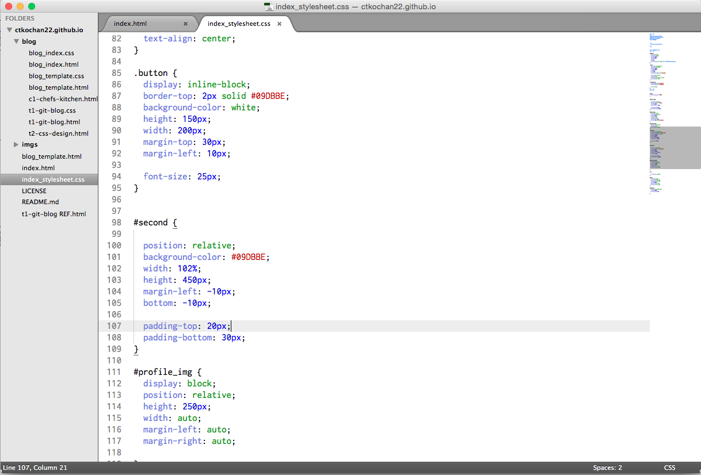

Understanding Margins, Borders, and Padding
Technical Blog
August 10th, 2015
- The margin (TM) is the space around the content. Adjusting this will adjust the HTML elements next to it
- The border (TB) is the edge of the content.
- The padding (TP) is the space between the content of the box and the border. This will move the border closer or further
This is the bare-knuckle explanation of margin, border, and padding. However, without context or experience, this is hard to wrap one’s mind around. A nice real-world example to conceptualize these terms is packaging and shipping an item.
When shipping something using UPS or Fedex, you always start with the item you are sending and a box to put it in. Now the size and type of box as well as how the item is packaged is determined by what the item is.
Lets start with the borders. The border is like the box itself. If you are shipping an item that is already in a box, you may not need another box (border). If it is a small and non-crushable item, you can use a paper packaging (thin border). And if it is a bigger item, you may need a thick cardboard box (thick border). In CSS, borders are what surround your content. You can determine whether a border is necessary, how thick, and whether it is dotted or solid.
Padding is just what it sounds like and serves the same purpose in our real world example. If you are shipping a delicate, breakable item, you should add padding to your packaging. So you pick a box that leaves some space between the box itself and the item you are shipping so that you can put newspapers or plastic fillers so that you can protect your item. Padding in CSS works the same way. Maybe your content needs a bit of space from the border, you can manipulate the padding to do that.
Margins is a bit harder to explain with our live example, but imagine you are shipping a fragile glass vase. Even though you may have added a large amount of padding (space between the box and your item) and stuffed it with newspaper, you are still worried it can break during shipment. Margin spacing is like asking for a package to be handled with care. The mail man will handle it will more care as well as place the package further away from other packages in transit. In CSS, manipulating your margins will do just that, it will create or eliminate space between your border and other borders of other elements.
In the end, margins, borders, and padding are ways to "package" your content. By playing with it, you can manipulate its placement on the site and how it fits next to other pieces of content. As you can see in the image below, both margins and padding are used to make various, slight adjustments.
